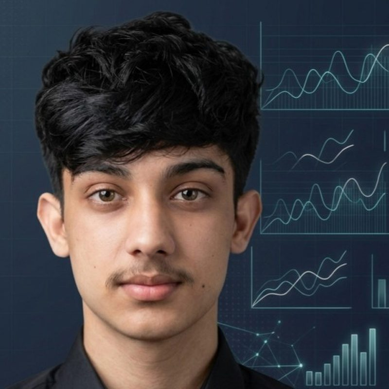

Raw rows in. Decisions out.
Data analyst in Lahore. I turn messy sales and customer data into Power BI dashboards that managers act on.

Six dashboards worth opening
Each one links to the live dashboard or the full report, plus the code behind it.
Every project
21 case studies and dashboards, all public on GitHub.
Tools, with the proof
The numbers come from the projects on this page.
Also in use: Excel, Power Query, NumPy, SciPy, statsmodels, Seaborn, Plotly, Sentence-BERT, TF-IDF and Chart.js.
About
For two years I've worked with the data behind real decisions. I clean it in Python, question it in SQL and hand over a Power BI page a manager can read in a minute.
- Data Analyst, Past EnlightenOct 2024 to now, remote
Sales, tour performance and customer reviews for a Lahore tour company: which tours, seasons and groups drive revenue, and which complaints keep returning.
- Freelance data analystJan 2025 to now, remote
Power BI and Excel reports that cut report time by 30%, and a falling-sales diagnosis that found three root causes for a retail shop.
- ICS, Army Public School2024 to now
Computer Science, Mathematics and Statistics. I speak English and Urdu.
Ten certificates, all checkable
Google courses on Coursera, job simulations from Deloitte, TATA and BCG on Forage, and HP LIFE.
Have data that needs a decision?
I'm open to data analyst and BI roles: remote, in Lahore or in the UAE. I reply within a day.